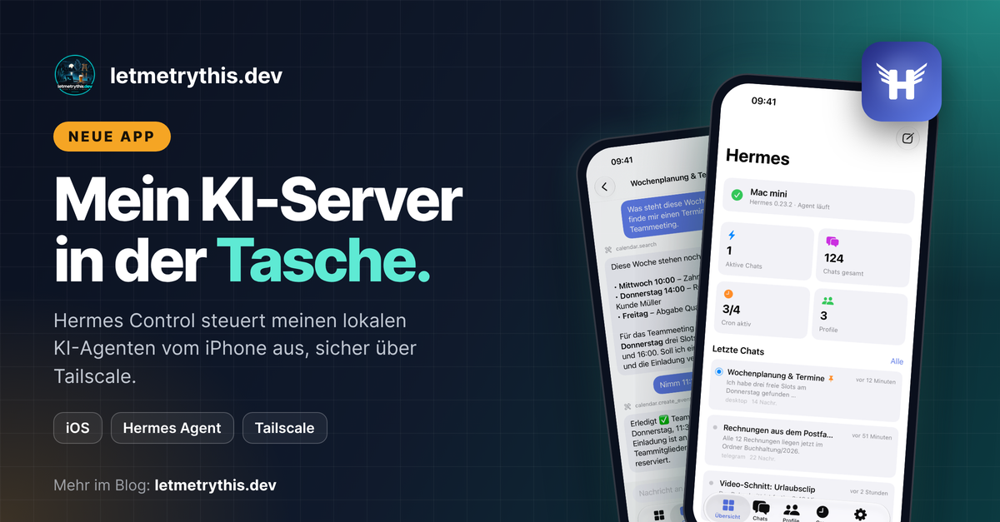
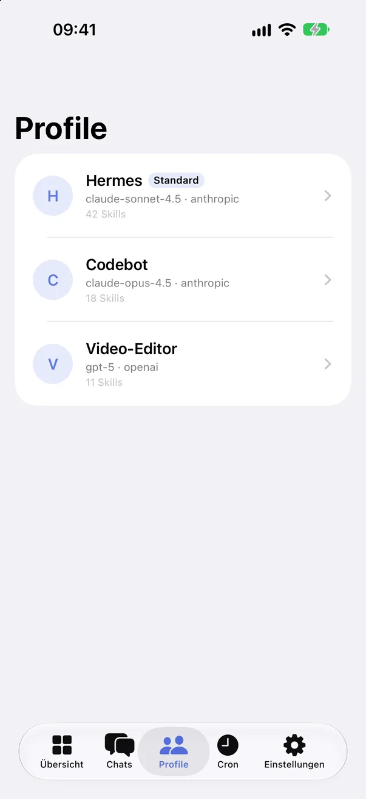
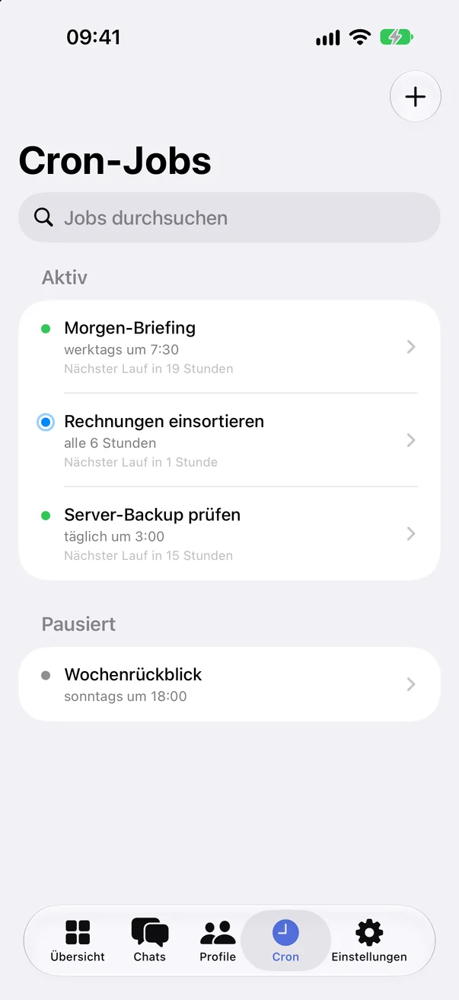
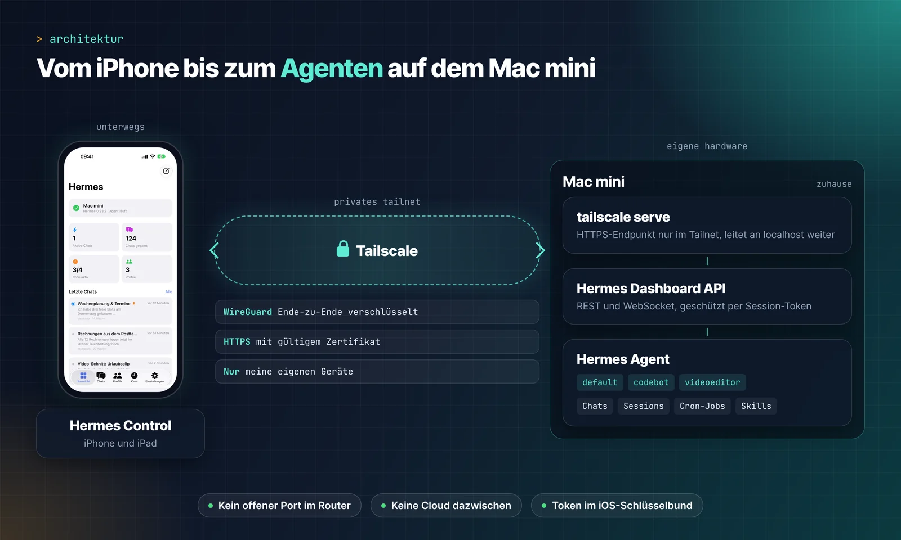

AI · iOS · Tailscale · 27. November 2026
Hermes Control: Meinen lokalen KI-Server vom iPhone aus steuern
Auf meinem Mac mini zu Hause läuft seit einiger Zeit ein eigener KI-Agent: Hermes Agent. Er sortiert Rechnungen aus dem Postfach, plant Termine, hilft beim Programmieren und schneidet Videos vor. Das Problem: All das konnte ich bisher nur am Schreibtisch anstoßen. Genau das ändert meine neue App Hermes Control. Damit habe ich meinen lokalen KI-Server jetzt auch unterwegs in der Tasche.

Die Idee: Der KI-Agent bleibt zu Hause, die Steuerung kommt mit
Mir war von Anfang an wichtig, dass mein Agent lokal läuft. Die Daten, auf die er zugreift, also Mails, Kalender, Dateien und Projekte, liegen bei mir und nicht bei einem weiteren Cloud-Dienst. Hermes Agent ist ein selbst gehosteter KI-Agent, der mit verschiedenen Modellen arbeiten kann und über Skills und Werkzeuge echte Aufgaben erledigt.
Der Haken an „lokal“: Der Agent ist nur so nützlich, wie ich ihn erreichen kann. Gerade die spannenden Momente passieren unterwegs. Im Zug fällt mir ein, dass ein Report noch fehlt. Beim Kunden will ich kurz wissen, ob der nächtliche Cron-Job durchgelaufen ist. Oder ich möchte einfach eine Idee loswerden, bevor sie wieder weg ist.
Die Lösung sollte deshalb zwei Dinge verbinden: Der Agent und die Daten bleiben auf meiner eigenen Hardware, und ich habe trotzdem überall Zugriff, ohne meinen Mac mini ins offene Internet zu stellen.
Was Hermes Control kann
Hermes Control ist eine native App für iPhone und iPad, geschrieben in SwiftUI. Sie spricht direkt mit dem Dashboard von Hermes Agent und nutzt dieselbe Schnittstelle wie die Desktop-App.
- Übersicht: Verbindungsstatus, Hermes-Version, aktive Chats, Cron-Jobs, Profile und verbundene Messenger auf einen Blick.
- Chats: Alle Unterhaltungen mit Suche. Antworten werden live gestreamt und lassen sich abbrechen. Werkzeugaufrufe, die eine Freigabe brauchen, bestätige ich direkt in der App.
- Profile: Mein Agent hat mehrere Rollen, bei mir zum Beispiel
defaultfür den Alltag,codebotfürs Programmieren undvideoeditorfür den Videoschnitt. Jedes Profil hat eigenes Modell und eigene Skills, und ich kann direkt darin einen neuen Chat starten. - Cron-Jobs: Geplante Aufgaben ansehen, pausieren, fortsetzen, sofort ausführen, neu anlegen oder löschen.
- Einstellungen: Mehrere Gateways, Verbindungstest, Hell- und Dunkelmodus. Das Zugangs-Token liegt im iOS-Schlüsselbund.



So kommt das iPhone sicher zum Mac mini
Die spannendste Frage war nicht die App, sondern der Weg dorthin. Einen Port im Router zu öffnen und das Dashboard meines Agenten ins Internet zu hängen, kam für mich nicht in Frage. Ein KI-Agent mit Zugriff auf Mails und Dateien ist genau die Art von Dienst, die niemand außer mir erreichen soll.
Deshalb läuft die Verbindung über Tailscale. Tailscale baut ein privates Netz zwischen meinen eigenen Geräten auf, das sogenannte Tailnet. Darin sind nur Geräte, die ich selbst angemeldet habe. Die Verbindung ist mit WireGuard verschlüsselt, egal ob das iPhone gerade im Mobilfunk, im Hotel-WLAN oder zu Hause hängt.

Auf dem Mac mini sieht das so aus:
- Hermes Agent läuft wie gewohnt und erledigt die eigentliche Arbeit.
- Das Hermes-Dashboard stellt eine REST- und WebSocket-Schnittstelle bereit. Jeder Zugriff braucht ein Session-Token.
- tailscale serve macht daraus einen HTTPS-Endpunkt mit gültigem Zertifikat, der nur innerhalb meines Tailnets erreichbar ist.
In der App trage ich einmal die Tailscale-Adresse des Mac mini und das Token ein. Ab dann funktioniert Hermes Control überall gleich, ohne dass ich irgendwo umschalten muss. Die Adresse hat dabei die Form https://<gerät>.<tailnet>.ts.net, und der Befehl auf dem Mac ist im Kern ein Einzeiler:
tailscale serve --bg --https=443 http://127.0.0.1:<dashboard-port>Das Ergebnis sind gleich mehrere Sicherheitsschichten: Nur meine Geräte kommen ins Tailnet, die Verbindung ist doppelt verschlüsselt, und ohne Token antwortet das Dashboard nicht. Wer kein Tailscale nutzen möchte, kann die App auch im selben WLAN mit der lokalen Adresse verwenden oder einen anderen VPN-Weg wählen.
Datenschutz: Keine Cloud, kein Konto, kein Tracking
Hermes Control selbst erhebt keine Daten. Es gibt kein Konto, kein Tracking und keinen eigenen Server von mir dazwischen. Die App redet ausschließlich mit dem Hermes-Gateway, das ich eintrage. Das passt zur Grundidee: Der Agent ist meiner, die Daten sind meine, und die App ist nur die Fernbedienung.
Ausprobieren ohne eigenen Server: der Demo-Modus
Nicht jeder hat schon einen Hermes Agent laufen. Damit man trotzdem sieht, wie sich die App anfühlt, gibt es einen Demo-Modus mit Beispieldaten. Ein Tipp auf „Demo ansehen“ reicht, und Übersicht, Chats, Profile und Cron-Jobs lassen sich ohne Einrichtung durchklicken. Den Modus habe ich übrigens auch für das Apple Review gebaut, denn die Prüfer haben natürlich keinen Zugriff auf meinen Mac mini.
Aktueller Stand
Version 1.1 ist fertig, läuft bei mir im Alltag und liegt gerade bei Apple im Review. Sobald die App im App Store verfügbar ist, ergänze ich hier den Link. Alles zur Einrichtung, häufige Probleme und den Kontakt findest du schon jetzt auf der Hermes-Control-Seite.
Wer meinen Weg mit LeckerBierchen verfolgt hat, weiß: Ein Release ist mehr als Code. Bei LeckerBierchen hat es bis zum EU-Release einige Runden gebraucht. Diesmal war ich besser vorbereitet, mit Support-Seite, Datenschutzangaben und Demo-Modus von Anfang an.
Häufige Fragen
Was ist Hermes Control?
Eine iPhone- und iPad-App für Hermes Agent, einen selbst gehosteten KI-Agenten. Sie verbindet sich direkt mit dem Hermes-Dashboard auf dem eigenen Rechner und zeigt Chats, Profile und Cron-Jobs.
Brauche ich Tailscale?
Nein. Im selben WLAN reicht die lokale Adresse des Rechners. Für den Zugriff von unterwegs empfehle ich aber eine verschlüsselte HTTPS-Verbindung, zum Beispiel über Tailscale oder ein anderes VPN, statt einen Port im Router zu öffnen.
Sammelt die App Daten?
Nein. Kein Konto, kein Tracking, keine Cloud dazwischen. Das Token liegt im iOS-Schlüsselbund.
Ist Hermes Control eine offizielle App von Hermes Agent?
Nein, Hermes Control ist ein unabhängiges Projekt von mir und kein offizielles Produkt von Nous Research.
Wie es weitergeht
Ideen für die nächsten Versionen habe ich einige, zum Beispiel Benachrichtigungen, wenn ein Cron-Job fertig ist oder der Agent eine Freigabe braucht. Über die Entwicklung berichte ich weiter hier im Blog. Wenn du Hermes Agent selbst nutzt und Ideen für die App hast, freue ich mich über dein Feedback.